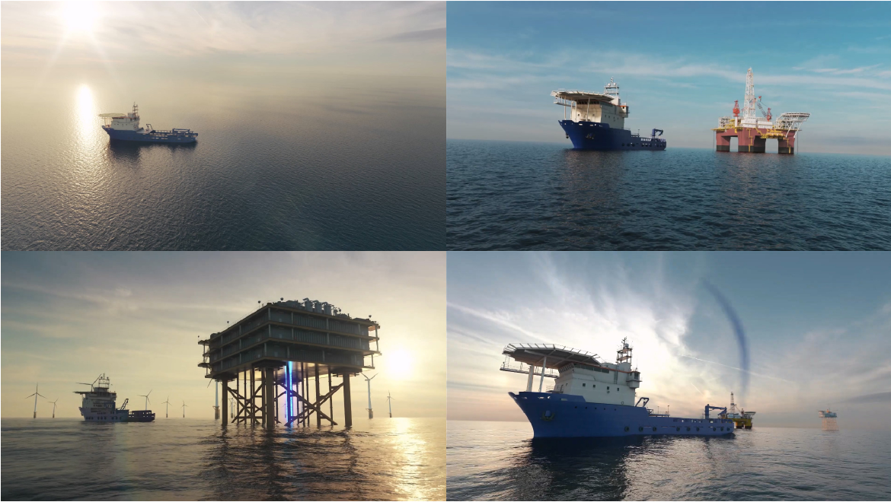
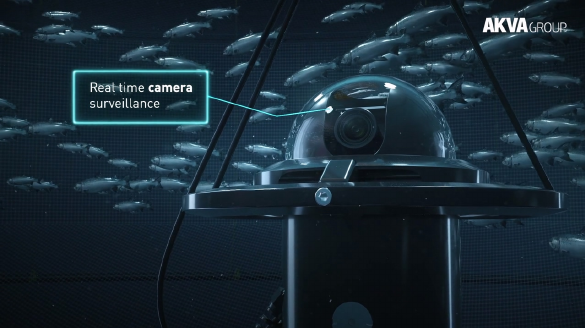
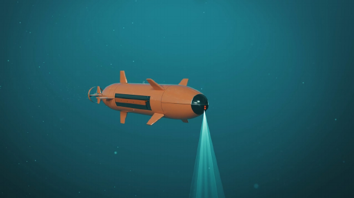
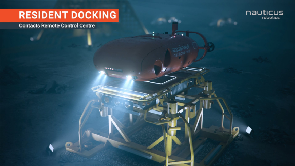
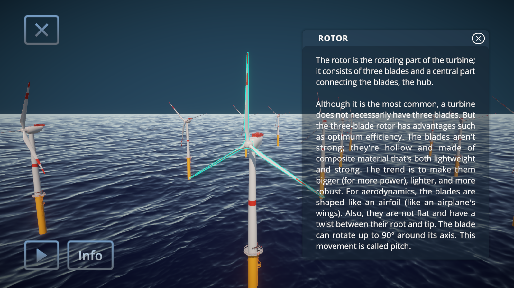

3D Asset
Production
Hard-surface modelling, UVs, texturing, shading, lighting, and rendering for maritime, oil & gas, and industrial environments.
Technical art / 3D pipeline
Technical Artist
& 3D Generalist
Hanoi, Vietnam
2017 - Present
Profile
Technical Artist and 3D Generalist with 9+ years in 3D production, procedural workflows, and production tool development.
My core practice is 3ds Max, Houdini, and pipeline tooling; it is complemented by hands-on Unity work in realtime visualization, automotive HMI prototypes, and interactive applications. I connect art, engineering, and code - from hard-surface modelling and look development to CAD optimization and artist-facing tools.
Core capabilities
01Hard-surface modelling, UVs, texturing, shading, lighting, and rendering for maritime, oil & gas, and industrial environments.
Technical rigging, animation, FX, and CAD asset optimization for interactive engines and clear technical storytelling.
Workflow design, scripts, and internal tools that standardize repetitive work and let artists move faster.
Experience
02Tools & approach
Nguyen Duy Dung / Technical Artist
Tool development
03Purpose-built tooling is where my artistic and technical practice meet. I create lightweight, practical utilities that reduce manual steps and make complex assets easier to work with.
Tools & tech
Core tools
Realtime / interactive
Education
Hanoi University of Architecture
2012 - 2017AnimMonster
2019Selected realtime project
Automotive HMI / Interactive Cockpit Prototype Unity
Developed an interactive automotive HMI prototype with driving and environment modes, realtime 3D vehicle visualization, animated UI states, lighting changes, and rain and snow effects. Contributed across UI integration, 3D scene setup, interaction logic, visual effects, and realtime presentation.
Visual portfolio
Industrial visualization, technical animation,
and realtime interactive experiences.

High-fidelity vessels and offshore scenes - asset creation, surfacing, lighting, and final render.

Realtime camera surveillance

Acoustic & optical communications

Resident docking system

Interactive wind farm presentation